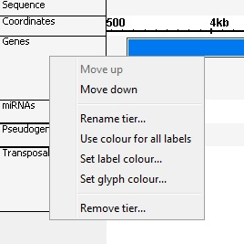
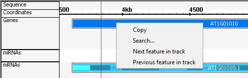

Context Menu
Right-clicking the tier label or a glyph displays a context menu.Tier label context menu
The context menu allows the tier to be moved, removed or have some of its displayed properties changed. The 'Sequence' and 'Coordinates' tiers cannot be moved or removed. Right-clicking on the 'Genes' label produced the following image.

The label of a tier can be changed using 'Rename tier...'. To change the background colour of one or all of the labels choose 'Set label colour...' or 'Use colour for all labels'. The glyph colour is changed using 'Set glyph colour...'. Note: This option has no effect on glyphs generated from Patman data.
Glyph context menu
Right-clicking a glyph shows a context menu with several options:

Clicking 'Copy...' gathers information about the item represented by the glyph and places it on the system clipboard. For a GFF annotation the information consists of the sequence details, the annotation in GFF format and the sequence bases in FASTA format. The clipboard contents can be pasted into a text-editor using the appropriate command, e.g. Ctrl+V on Windows.
The 'Search...' option is enabled for GFF annotations which have the 'ID' or 'NAME' attributes specified. Clicking 'Search...' permits the user to perform an internet search using the identifier.
Clicking 'Next feature in track' and 'Previous feature in track' move the view directly to the next or previous glyph in the tier.